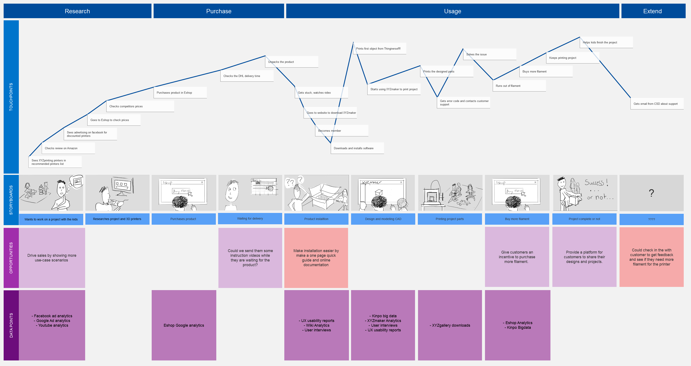
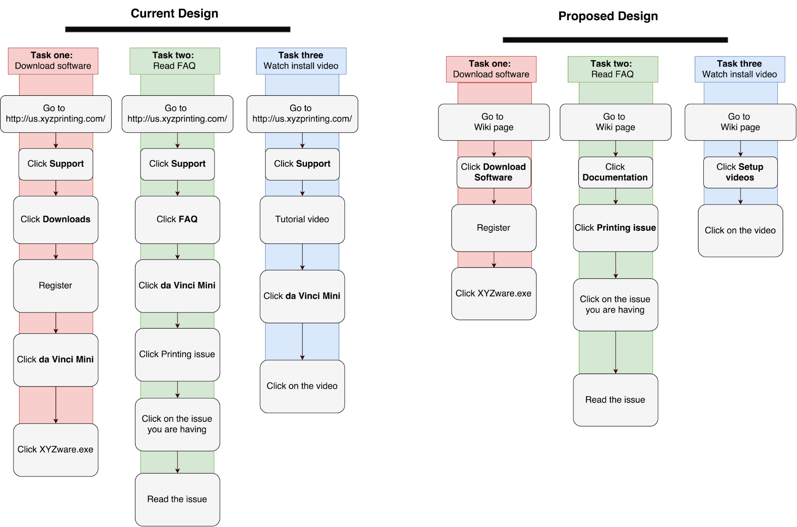
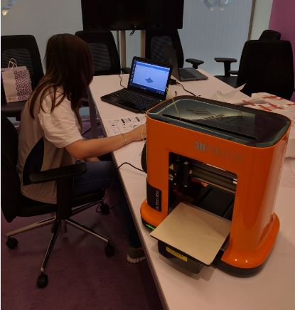
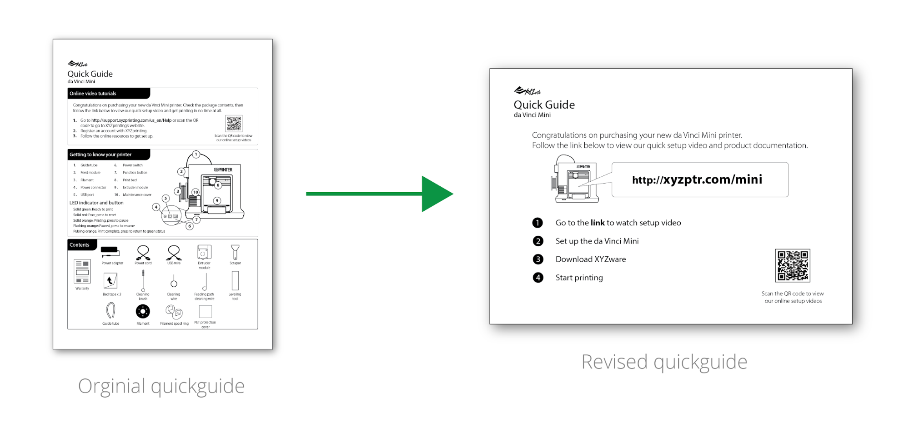
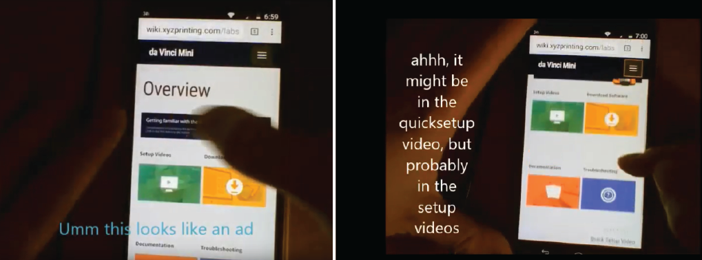

Mobile first online product documentation
Overview
XYZprinting, a world-leading 3D printing company was releasing an entry-level 3D printer designed for families and home hobbyists called the da Vinci Mini. Together with a product marketer and GUI designer we created an online documentation website and quick setup process to support da Vinci Mini users during product installation and use. The website has been in use for use for 3 years with the number of new users to the site regularly doubling the amount of newly activated 3D printers, showing that website is useful not only as documentation for new and existing users but also for people interested in buying the product.
Problem
The da Vinci mini had been marketed and designed to look like a consumer electronic product, the problem was that setup was slightly more complicated than users expected. During user testing, we saw some people would opt out of reading the manual that came with it and instead do a quick search on their mobile device for a setup video or try and set the product up without the manual and Google search for any issues as they arose. The only online documentation available was a PDF version of the manual. This made reading hard on mobile devices and searching for information slow.
Opportunity
Creating an online documentation website can better control the product setup experience for users, providing them with the the right amount of information at the right time. This alsos helps XYZprinting’s SEO by generating more relevant searchable content that can be tracked to see what issues users are searching for the most and address these in later design iterations.
Solution
We developed a website that contains easily accessible links to all XYZprinting’s current online documentation, including videos, FAQ and customer service center. We also created an easily scannable menu so users can quickly locate the information they require.
My Role
UX Designer
Tools: Axure, Figma, pen and paper
Date: October 2018 - March 2019 (6 months)
Team:
Deliverables: Axure design specification document, Axure interactive prototype, research findings presentation
Impact
The website has been in use for over 3 years with mobile usage growing to 23% of all site hits. The average amount of monthly new users is double the monthly product sales count, showing that website is useful not only as documentation for new and existing users but also for people interested in buying the product.

--- Process ---
User walkthrough and User Journey
I conducted a user walkthrough unboxing the product, downloading the software and conducting a first print. This allowed me to highlight any major issues and document the steps involved in the user journey. Based off previous user interviews by other team members and my findings, I then created a chart mapping the user journey.
I then broke the journey down into three common setup tasks to see where improvements could be made using an online documentation website. These tasks were: download the printing software, reading an FAQ and watching an install video.
Prototyping and Testing
Based off the three common setup tasks, I created a prototype website in Axure with video links and basic content and a one page quick guide that would be included in the product packaging inplace of the existing manual. To test this new design, we asked four users who had never used a 3D printer before to unbox the da Vinci Mini and print something. Two users would be given the existing design and two would be given the proposed design. During setup two users used Google to search for troubleshooting information but no one accessed the prototype website. During testing we observed and confirmed with users afterwards that no one read the link in the quick guide because they were overwhelmed with information further down on the page. We categorized all the issues users encountered during testing using the NNG’s usability heuristics and found 38.9% related to help & documentation. This highlighted a lack of relevant information available during product setup.
Redesign
Based off what we observed during testing we shortened the quickguide to just one link. This would be the first thing users saw when opening the product, the manual would also be included to give users the option of using both digital and physical documentation.
Website Testing
By showing the lack of documentation during product setup we were able to get management’s support to create an minimum viable solution by designing a Wordpress site. After we had created a website, I tested the tasks I had defined earlier with four users on Usertesting.com. All users were able to download the printing software, find the FAQ and install video in under 2 minutes.
Outcomes
The website framework has been used for 5 of XYZprinting’s products, the most popular of those being the da Vinci Mini documentation website which has been in use for 3 years.
The quick guide design was not implemented because it would add to the documentation team’s workload and increase the amount of paper included in the packaging. This is partly because the documentation team was not consulted earlier enough in the process.
XYZprinting is currently working on a new CMS for all product documentation and used the analytic data from the existing 5 websites as evidence that this will create value for the consumer.